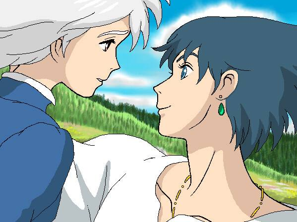

| 哈尔的移动城堡 | ||||
|---|---|---|---|---|
| 首页 | 影片信息 | 剧情简介 | 人物简介 | 影片制作 |
|  |
影片设定 电影把爱情故事设定在战火纷飞的背景之下，使之更为动人。尽管在制作之前两部影片的过程中承受了痛苦，同时还伴随着即将退休的传闻，宫崎骏仍然返回绘图板前，开始了第二个文学改编作品的创作。同《幽灵公主》相似，影片也有一位遭到诅咒的主角。不过这次换成了平凡的女孩苏菲。同其他宫崎骏的作品一样，该片有着许多细节设计，但却是他的作品中对故事情节最不重视的一部。 与原著的区别 《哈尔的移动城堡》三部曲包括《哈尔的移动城堡》、《空中城堡》和《迷宫之屋》。宫崎骏的同名影片改编自第一部。宫崎骏的改编以“期盼生存、感动爱情”来描述《哈尔的移动城堡》，呈现出一部现代社会无法实现的“战火中的爱情剧”，来诠释“人该活在和平与爱之中”和“反战”的故事主题，小说则更为侧重人的自我成长、自我认同与自我改变。 取景地 《哈尔的移动城堡》中城镇场景则主要参考法国阿尔萨斯、法国巴黎及德国海德堡。其中阿尔萨斯省的科尔玛镇有着运河美景，16世纪的风貌，以及“小威尼斯”的美名。 |